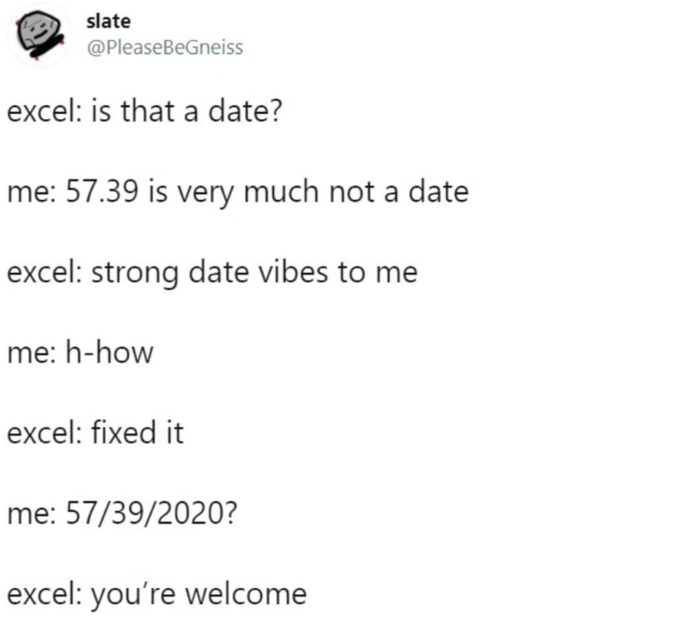
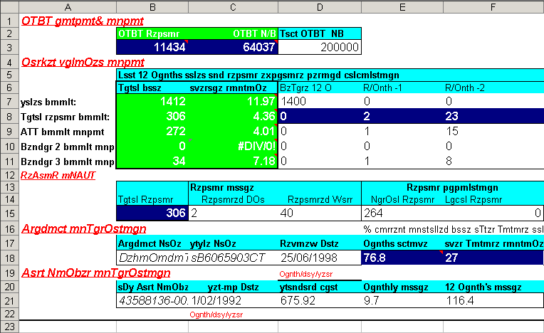
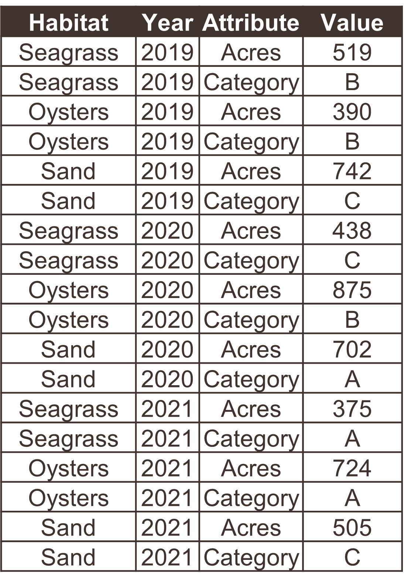

4 Principles of tidy data

Tabular data allow you to store information, where observations are in rows and variables are in columns. It’s very common to try to make tabular data more than it should be. Unless you spend a lot of time working with data, it can be difficult to recognize common mistakes that lead to table abuse.
Before we get into tidy data, we need to discuss some of the downfalls of Excel as a data management system. There are many examples that demonstrate how Excel has contributed to costly mistakes through table abuse or outright negligence, often to the detriment of science (Ziemann, Eren, and El-Osta 2016).

Excel allows you to abuse your data in many ways, such as adding color to cells, embedding formulas, and automatically formatting cell types. This creates problems when the organization is ambiguous and only has meaning inside the head of the person who created the spreadsheet. Embedding formulas that reference specific locations in or across spreadsheets is also a nightmare scenario for reproducibility.

If you absolutely must use Excel to store data, the only acceptable format is a rectangular, flat file. This is typically saved as a .csv file. What do we mean by this?
A rectangular file:
Store data only in rows and columns in matrix format (e.g., 10 rows x 5 columns), with no “dangling” cells that have values outside of the grid or more than one table in a spreadsheet.
A flat file:
No cell formatting, no embedded formulas, no multiple spreadsheets in the same file, and data entered only as alphanumeric characters.
Broman and Woo (2018) provide an excellent guide that expands on these ideas. Essentially, these best practices force you to isolate the analysis from the data - many people use Excel to mix the two, leading to problems.
Now we can talk about tidy data. The tidy data principles developed by Hadley Wickham (Wickham 2014) are a set of simple rules for storing tabular data that have motivated the development of the wildly popular tidyverse suite of R packages (Wickham et al. 2019). The rules are simple:
- Each variable must have its own column;
- Each observation must have its own row; and,
- Each value must have its own cell.
Graphically, these rules are shown below (from Wickham and Grolemund 2017):

The following examples show five tables represented in different arrangements. Only one of the tables is tidy - which one?

Only the first table is tidy - each variable has its own column, each observation has its own row, and each value has its own cell. Table 2 violates the first rule, Table 3 violates the third rule, and tables 4a and 4b violate the first and second rules.
Exercise and discussion
Download this untidy dataset and make it tidy using your preferred software.